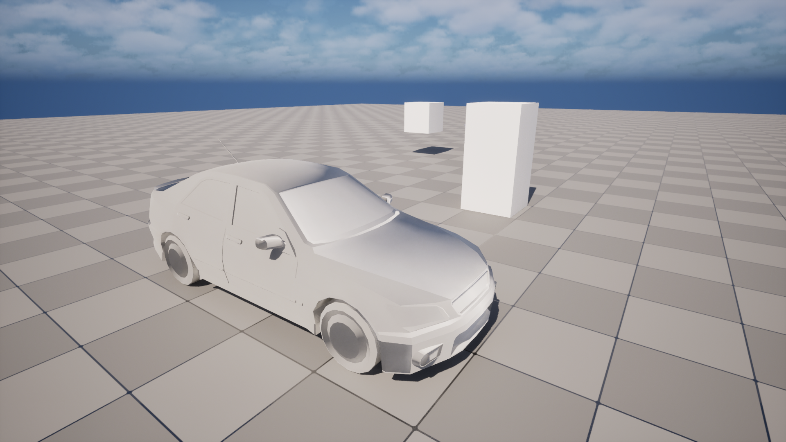
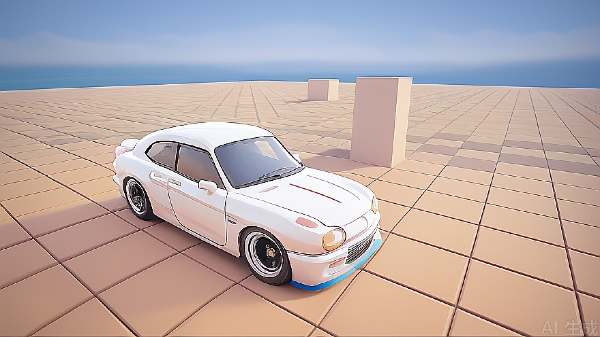
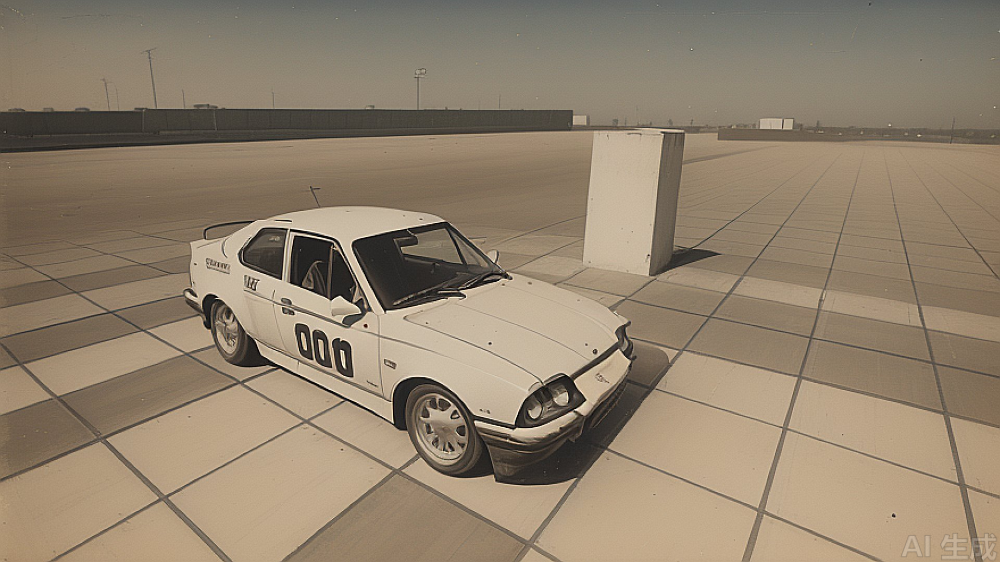
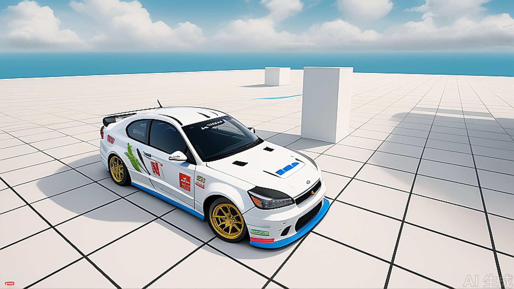

UE5 AI Texture & Material Pipeline
Automated Concept-to-Asset Workflow Tool
This Unreal Engine 5 Python tool accelerates look-development by bridging the gap between scene blocking and final material application. Using a dual-AI integration (Tencent Hunyuan and Meshy AI), it transforms simple viewport screenshots into production-ready textured assets in seconds.
Key Features
- Intelligent Scene Referencing: Captures automated UE5 screenshots as a structural foundation for AI generation.
- Hunyuan Style Synthesis: Generates high-fidelity visual references with an Intensity Slider to control the balance between the original layout and AI creativity.
- One-Click Retexturing: Automatically exports selected FBX meshes and Hunyuan references to the Meshy AI API.
- Automated PBR Workflow: Fetches Base Color, Roughness, and Normal maps via API callbacks, then builds and assigns materials to actors in real-time.
Technical Stack
- Engine: Unreal Engine 5 (Python API)
- AI Models: Tencent Hunyuan (Style Transfer) & Meshy AI (Mesh-to-Texture)
- UI Framework: PyQt
Pipeline Impact
- Eliminates Context Switching: Keeps artists inside the UE5 viewport, removing the need to jump between browsers and external texturing suites.
- Rapid Prototyping: Enables "Instant Look-Dev," turning greybox levels into visually cohesive scenes for immediate stakeholder feedback.
- Controlled Generation: Uses existing geometry and screenshots as a base to eliminate AI randomness, ensuring the output respects the artist's original scale and composition.



